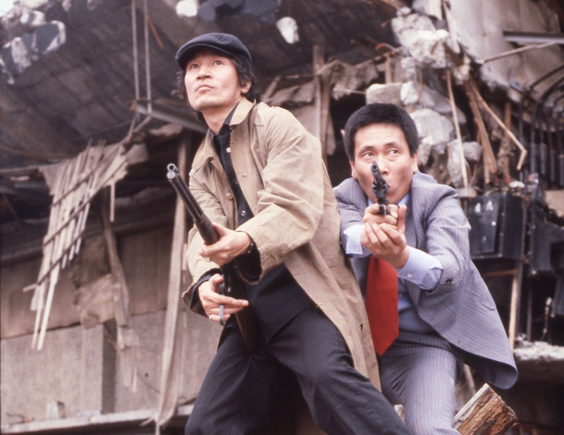
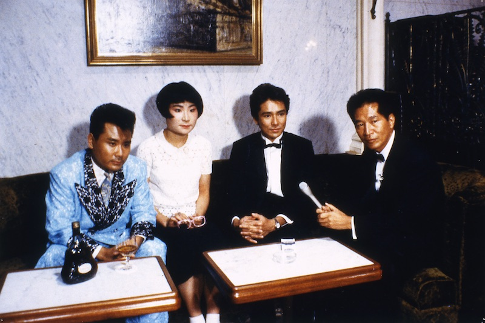
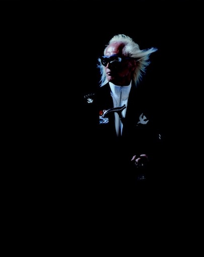
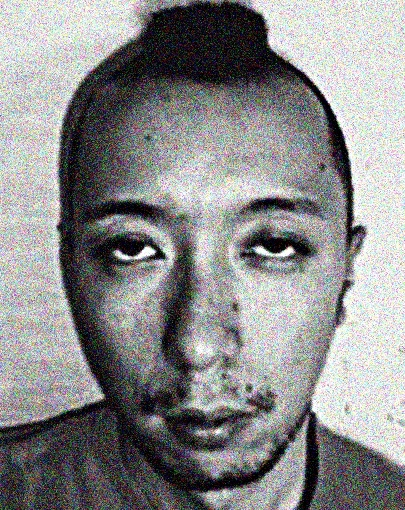
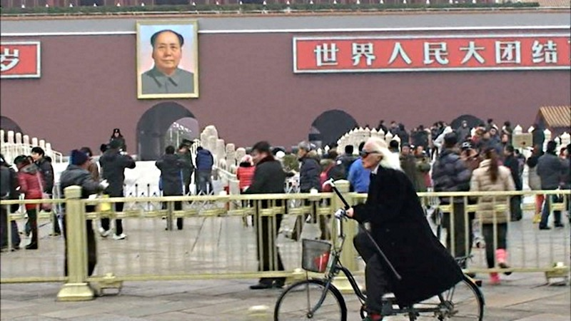

YUYA IS BACK
Super Gun Lady: Police Branch 82

©1979 "Super Gun Lady: Police Branch 82", Nikkatsu

1979/Japan/96min
Director, writer: Chusei Sone
Writer: Haruhiko Arai, Jun Takada
Original comic: Toru Shinohara
Cast: Emi Yokoyama, Kaoru Janbo, Kei Sato, Yuya Uchida, Shin Kishida, Rikiya Yasuoka, Masato Furuoya
A film based on a comic where a pair of female cops, members of the secret division Branch 82, fight against crimes. The highlight of the film is the violent acting of Yuya Uchida and Masato Furuoya when they rob a bank. This is a must see and you will want to imitate the scene where Yuya gives a speech before hostages.
Archived by the National Film Center of Tokyo
A Pool without Water
©1982「水のないプール」若松プロダクション
1982/Japan/103min/Vista
Director: Koji Wakamatsu
Writer: Eiichi Uchida
Music: Katsuo Ono
Cast: Yuya Uchida, Reiko Nakamura, Mie, Kenji Sawada, Tamori, Fujio Akatsuka
A humble subway ticket examiner one day hits upon the idea of knocking a girl out with chloroform and raping her. Taking a hint from an actual case that happened in Sendai, cinematized with a superb cast. The scene where Yuya completes his crime in the morning is refreshing. "I'm a guard of this town......This is politics!"
Comic Magazine

©1986 “Comic Magazine” Production committee
1986/Japan/124min
Director: Yojiro Takita
Writer: Yuya Uchida, Isao Takagi
Cast: Yuya Uchida, Beat Takeshi, Kazuyoshi Miura, Hiromi Go, Onyanko Club
A TV reporter named Kinameri covers serious cases of that time such as the Kazuyoshi
Miura Case, Crash of Japan Airlines Flight 123, Toyota Trading Company Case. It won the award for best actor at Kinema Junpo and other movie awards of the year. It won high praise at the Cannes Film Festival and was released throughout the world. "I Can't Speak Fucking Japanese!"
The Prey
©1979 “The Prey”, Toei

1979/Japan/80min
Director: Koji Wakamatsu
Music: Matumbi, Peter Tosh
Cast: Yuya Uchida, Jun Tatara, Yoko Kurita
This is not acting, but Rock'n Roller Yuya Uchida's first solo album on the screen. This is the impact of "Harder They Come" meets "Two or Three Things I Know About Her" and the whole world doesn't know about it. Swaying along with the bass line of English Reggae star Matumbi, feel the pleasure of watching "The Prey" with no subtitles. SMOKE "EJIKI", real LOVE & real PEACE. (Text by Mob Norio)
[Talk Event] Yuya Uchida × Mob Norio talk show /YUYA WORKS
9/17 (Sat) 14:50-


Yuya Uchida
Forever rock'n roller. His debut was at Nichigeki Western Carnival in 1959. He has produced numerous bands like Tigers, Flowers, Flower Travellin Band, Creation. The New Years World Rock Festival, which he hosts in year ends has reached its 43rd anniversary this year and now takes place in not only Japan but USA, UK, China region, Korea and Russia. He has also organized it in Tohoku since 2012. The movie "Comic Magazine" which he planned, wrote and stared got a great reputation from all over the world and was screened at Cannes Film Festival and MoMA as well. He won the award for best actor at Kinema Junpo, the special award at Blue Ribbon in the year. In 2013, he collaborated with Rino Sashihara from HKT48 and released the song "Shekina Baby". He has been planning more music, movies and books at his age of 69 (Rock)+7.
Mob Norio
Born in Nara in 1970. The author of "Introduction to Nursing Care" (Akutagawa Prize winner) and "JOHNNY TOO BAD Yuya Uchida" (an insane split book that weaves between a DJ novel based on Yuya's critical biography and Yuya's collection of talks in the magazine "Heibon Punch"). "If I had not seen this "The Prey", I would have been a criminal like Yuya in the movie."
YUYA WORKS

©YUYA UCHIDA OFFICE
2016/Japan/70min
The trace of images in which Yuya Uchida "swims", "runs" through with his bicycle for 30 years. "Yuya Triathlon". This is the exclusive premier screening for the talk event.